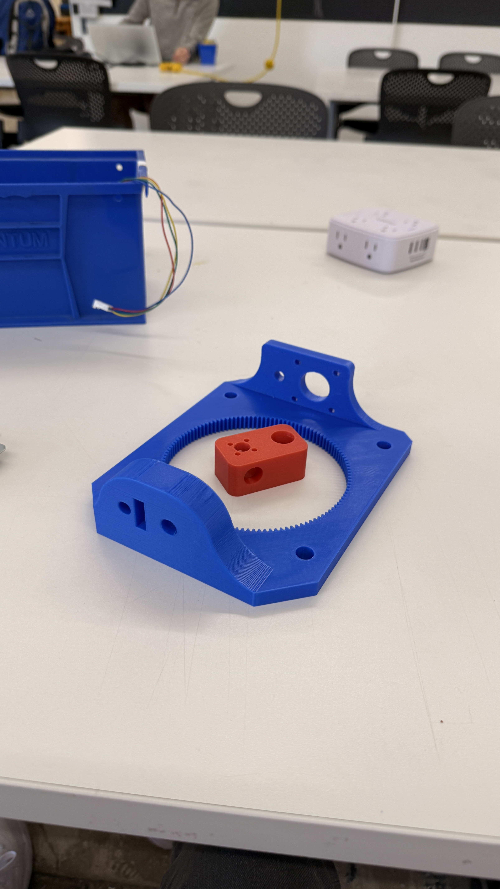
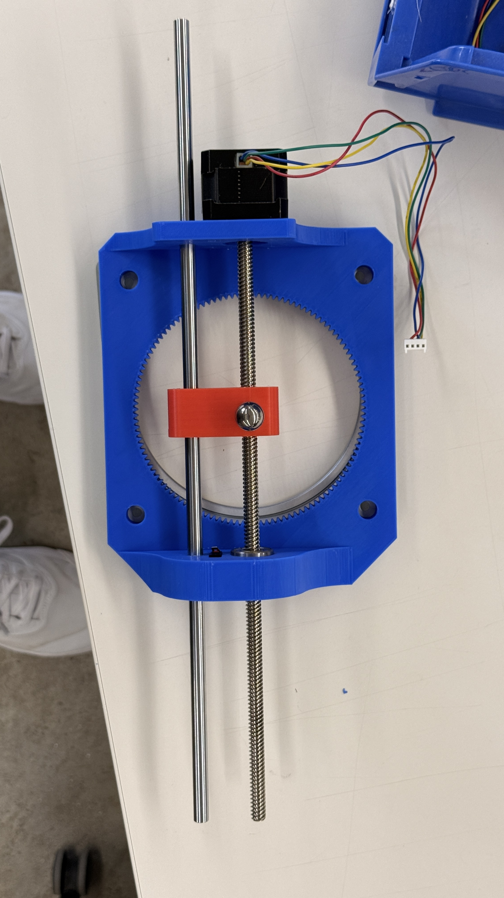
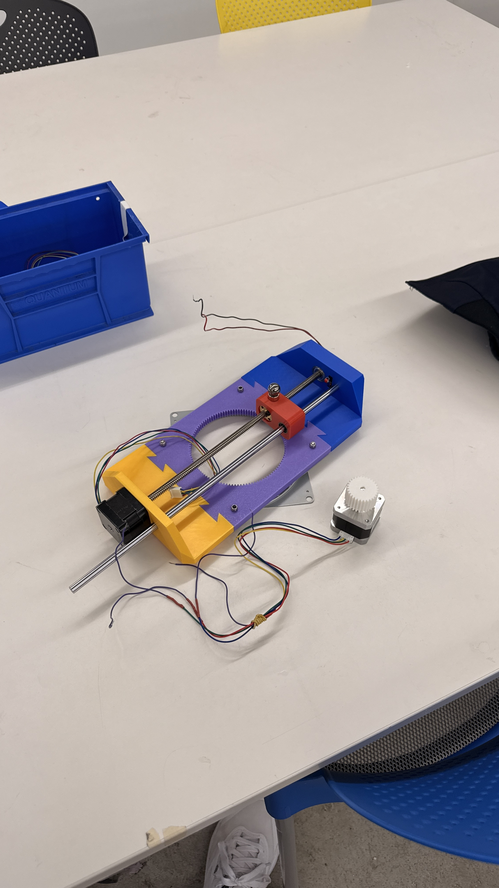
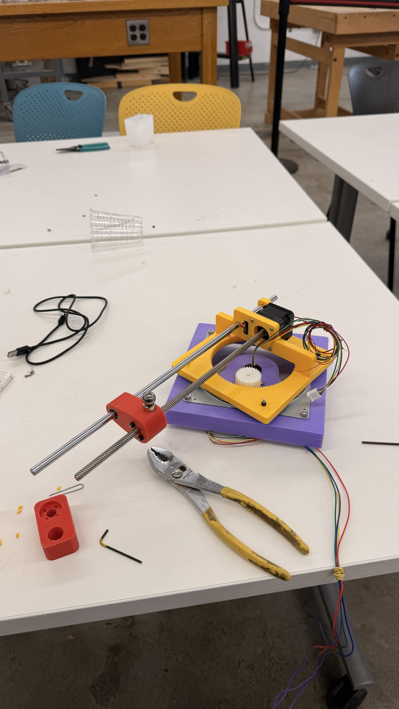
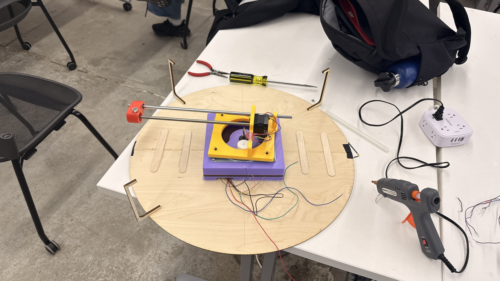
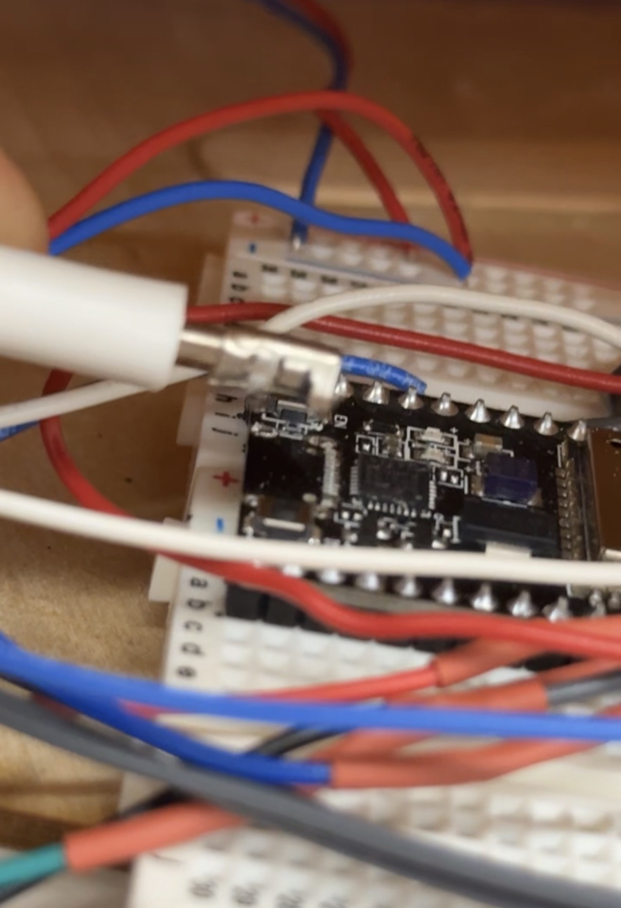

Week 10: Machine
Team: Alex, AJ, Faith, Victor

This week, our team (Alex, AJ, Faith, Victor) worked together to create an automatic Zen Garden from scratch! Utilizing 3D printed gears, a laser cut frame, and two stepper motors, we were able to create 2 axis machine that draws paths on sand using a metal bearing.
Brainstorming
At the beginning of the project, our group already decided that we wanted to make something different, free from the constraints of the provided 2-axis gantry kit. We were immediately drawn to these automatic zen garden kinetic sculptures, which seemed quite simple to make despite the hundred dollar price tag. We thought that controlling the steel ball below the wood surface was a unique mechanism that was perfect for this weeks assignmnent.
Early Prototypes
We knew that we would have to use a stepper motor to control the rotational axis and another to control the linear axis. We immediately settled on a lead screw and traveler mechanism.
Our design was centered around the lazy susan bearing.
Our early prototyping began with the most complex part. We decided to create the piece that would mount to one side of the bearing and carry the linear axis. We also created the magnet carrier that would go on the lead screw.
By using a internal gear, we can increase the resolution of the rotational axis beyond microstepping. This stage was also where we fine tuned mounting the stepper mounts and tolerances for the guide rail and linear bearings.
However, our initial designs had some drawbacks.
In order to extend our range of motion, we had to seperate our mechanism into several parts due to the limited size of the printer beds.
3D prints, bearing, and stepper
However, we realized that rotating around the center of our lead screw was inefficient/redundant. In our third iteration, we put the end of the lead screw at the center of our assembly, effectively doubling the radius of our movement.
At this point, we also assembled a base to hold the slip ring (which makes it possible for the wires to spin) and the stepper motor and spur gear for rotational movement.
Final Product
Our project really began to come together after we constructed the lasercut wood frame and lid.

After wiring, programming, and creating the wooden frame to hold the sand, our project is almost complete!

Very exciting
Adding the veneer walls and sand was the final part!
Sick timelapse of the spiral pattern!

Look at that nice sand trail

Don't you feel more zen already?
Components Used
- ESP32 Microcontroller: used to control the stepper motors, handle input/output signals and manage programmed motions.
- Stepper Motor (2X): connected to the lead screw to drive the linear motion and to the base for the circular motion
- Lead Screw: convert rotational motion from the stepper motor into linear motion for the magnet carriage
- Magnet and Metal Ball: how we draw on sand through the wood platform
- Lazy Susan Bearing: allows the base to rotate smoothly
- 3D-Printed Base: includes motor mounts and the carriage for the lead screw system.
- Plug: powers the motor and control electronics.
- Breadboard and Jumper Wires: used for circuit prototyping and connecting the ESP32 to motor drivers.
- Motor Drivers: interfaces between the ESP32 and stepper motors
- Wooden Circular Platform / Sand Tray: holds the layer of sand on which the metal ball creates patterns
- Wood Base : where the breadboards + the 3D-Printed structure is placed to keep everything together
- Wood Veneer : used to wrap around the base and tray of sand

Here's what it looks like
View code here!
Challenges
Sand is a messy medium to work with. Pretty sure there's some crunch under my "c" key.
The fabrication and assmbly stages were fine the most part. The biggest challenge we encountered here was getting a base of the desired size since we had limitations whether it's with the laser-cutter or shopbot. The main challenges were when it comes to driving the machine and wiring.
We also faced wiring and power connection challenges. One of our plugs had its positive and negative terminals reversed, which fried two motor drivers. With Bobby's help, we figured what was wrong and replaced the damaged drivers (MAYBE DON'T ALWAYS TRUST LABELS), and used a multimeter to verify correct polarity before powering the system again. These steps helped prevent further electrical issues.
On the software side, we struggled to find the right combination of step size, acceleration, and motor speed to minimize vibration and noise while maintaining smooth movement of the base. If the motors moved too quickly, they skipped steps and caused uneven patterns; if they moved too slowly, the drawing motion became inconsistent. After several iterations, we tuned the stepper parameters in our Arduino code to achieve a good balance between precision and smooth operation.
Mechanically, friction from the traveler touching the wooden top due to the pull between the magnet and marble caused some skipped steps. If we were to redo this project, we would definetly use a stronger motor or figure out a better way to regular the height of the traveler (ie. two guide rails). We ended up switching to a smaller marble and weaker magnet to rectify this, but it isn't always perfect.
Also, as we were testing, we left the power plugged in, which resulted in one of the steppers getting so hot it melted the 3D printed gear that was attached to it.
In the final stretch of our project, I (Victor) yanked my laptop away and absolutely cooked the usb c port on the ESP32 we were using. While we were able to save our project by switiching to the one on Alex's project, not exactly ideal.
Reflection
We had a lot of fun making this project, as stressful as it was. No all nighters though so we'll take it!